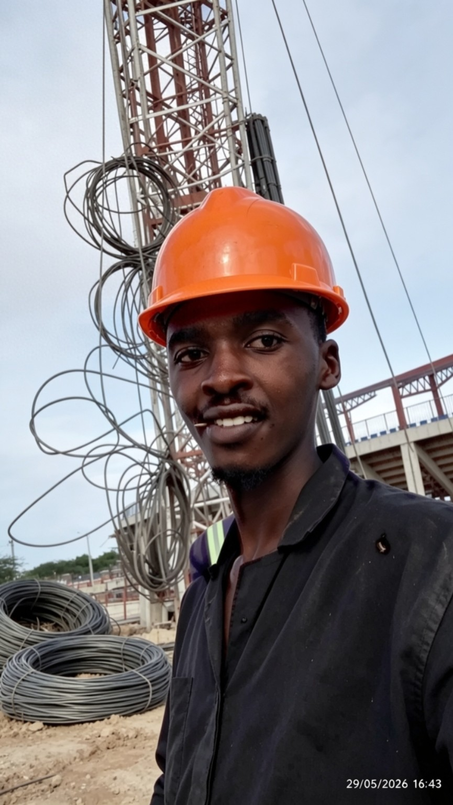

⌁
Fiber Optics
Fiber routing, closures, splicing and FTTH deployment work.
HELLO, I'M
A self-driven, disciplined and eager-to-learn technician passionate about fiber networks, ISP infrastructure and keeping people connected.

01 / ABOUT
I enjoy working where physical infrastructure meets networking — from fiber installation and splicing to OLTs, customer access networks and MikroTik-based ISP environments.
My approach is simple: learn continuously, troubleshoot methodically, work safely and leave a network better than I found it.
02 / TECHNICAL FOCUS
Fiber routing, closures, splicing and FTTH deployment work.
Access-network equipment, optical distribution and customer-side connectivity.
Routing, PPPoE, bandwidth management, uplinks and ISP network operations.
Tracing physical and logical faults and restoring reliable connectivity.
03 / FIELD WORK
Real field and network-infrastructure moments from my work.
Reliable internet starts with reliable infrastructure.
— Elvis Kinyanjui04 / CONTACT